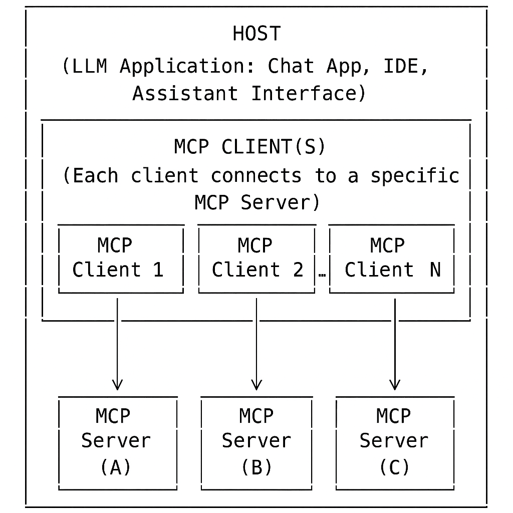
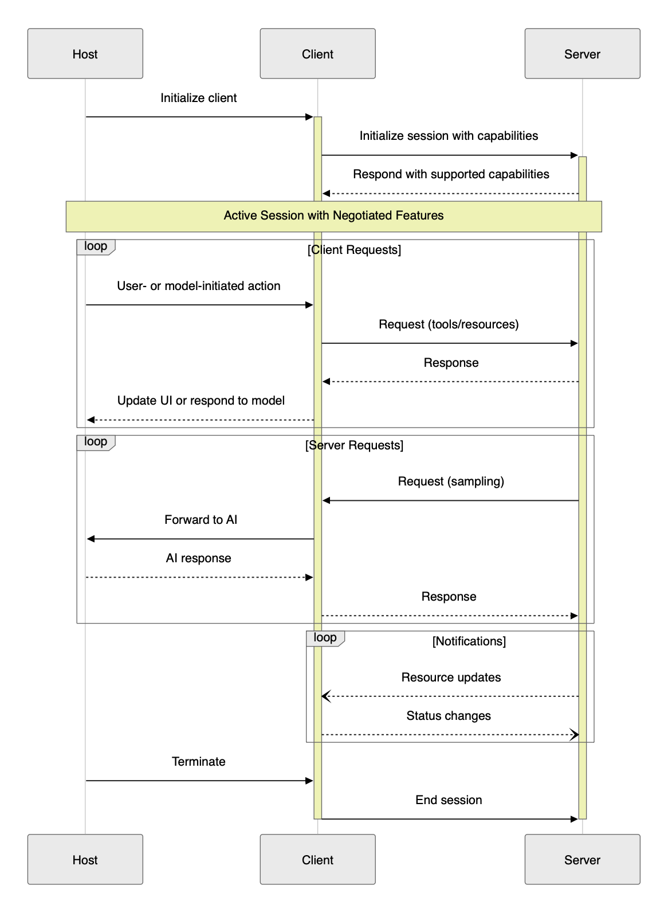

Module 4: Developer's Guide to Model Context Protocol (MCP)
As LLMs became more powerful, developers wanted to connect them to external tools and data. Early attempts relied on custom, one-off solutions, which were difficult to maintain, inconsistent, and often insecure.
This module introduces developers to the Model Context Protocol (MCP), a standardized protocol developed by Anthropic that enables Large Language Models (LLMs) to interact with external tools, APIs, and data sources in a structured and secure way.
Hands-On Lab: Launch the companion lab notebook
to practice building and testing MCP client-server integrations. In the lab, you'll transform direct tool calls into protocol-based interactions, experience the three-layer MCP architecture, and see how modular, secure AI integrations work in practice.
What You'll Learn
Architecture: The roles and responsibilities of the host, client, and server in an MCP system, ensuring modularity, security, and clear separation of concerns.
Core Message Types: Standardized JSON-RPC message types—requests, responses, notifications, and errors—that enable structured, reliable, and extensible communication between MCP components.
Features: Outlines the core capabilities MCP enables—such as resources, tools, prompts, and sampling—allowing clients and servers to declare, negotiate, and use powerful, composable functions.
Connection Lifecycle: How MCP sessions are initialized, maintained, and terminated, including capability negotiation and supported transport protocols for robust, stateful connections.
Transport Protocols: Supported communication protocols (stdio, HTTP), session management, and authorization.
Security Principles: Best practices and requirements for user consent, access control, and safe tool use, ensuring secure and trustworthy MCP integrations.
You will learn how these elements together make MCP a robust, extensible, and secure foundation for advanced AI integrations.
Architecture
MCP System Overview
Quick Summary: MCP uses a modular, client-server architecture with strict security boundaries and clear separation of concerns.
High-Level Architecture: Host, Client, and Server

Figure: The Host manages multiple clients, each connecting to a specific server. Each client-server pair is isolated, ensuring security and modularity.
Role
Main Responsibility
Example
Host
Manages user input, LLM interactions, security, user consent, and connections
IDE Application: Receives a user's code question, uses the LLM to interpret it, decides to call the code search tool, and displays the answer in the UI.
Client
Protocol handler, connects to one server, enforces boundaries
Code Search Connector: Receives a search request from the host, sends it to the code search server, and returns the results.
Server
Operates independently—cannot access the full conversation or other servers. Processes requests only from its assigned client and provides access to resources, tools and prompts.
Code Search Server: Indexes project files and responds to search queries from the client.
MCP Design Principles
🛠️ Servers should be extremely easy to build: Host applications handle orchestration, so servers focus on simple, well-defined capabilities.
🧩 Servers should be highly composable: Each server works in isolation but can be seamlessly combined with others via the shared protocol.
🔒 Servers should not be able to read the whole conversation or "see into" other servers: Servers only receive necessary context; each connection is isolated and controlled by the host.
⬆️ Features can be added to servers and clients progressively: The protocol allows new capabilities to be negotiated and added as needed, supporting independent evolution.
How It Works (At a Glance): Practical Example
Scenario: A user interacts with an AI-powered productivity assistant (the host) that integrates both a calendar tool and a weather tool.
User: Asks, "Do I have any meetings this afternoon, and what's the weather forecast for that time?"
Host: Uses the LLM to interpret the request and determines it needs to:
Check the user's calendar for meetings this afternoon (calendar tool)
Get the weather forecast for the meeting time (weather tool)
Host: Uses Client 1 to connect to Server 1 (Calendar Tool), which returns: "You have a meeting at 3:00 PM."
Host: Uses Client 2 to connect to Server 2 (Weather Tool), which returns: "The forecast at 3:00 PM is sunny, 75°F."
Security Boundary: Each client only communicates with its assigned server. The calendar server never sees weather data, and vice versa.
Host: Aggregates the results and presents: "You have a meeting at 3:00 PM. The weather at that time is expected to be sunny, 75°F."
Key Point: This example shows how MCP enables secure, modular, and orchestrated multi-tool workflows.
Note: MCP provides official SDKs for multiple languages,
including Python
and TypeScript,
to simplify development and integration. See official documentation for more details.
Core Message Types
Overview
MCP uses JSON-RPC 2.0 as its foundation for structured, reliable communication between hosts, clients, and servers. There are four core message types—Request, Response, Error, and Notification—which enable both sides to exchange actions, results, errors, and updates in a consistent way. Understanding these types is essential for building and integrating MCP-compliant tools and applications.
Main Message Types
📤 Request
Asks another component to perform an action or provide information.
Batching: MCP (via JSON-RPC 2.0) supports sending multiple requests or notifications in a single batch for efficiency.
Cancellation: MCP supports cancelling in-progress requests using a special notification (e.g., "notifications/cancelled"), allowing clients or servers to request that a long-running operation be stopped if it is no longer needed. Learn more
Extensibility: Custom methods and parameters can be defined as long as they adhere to the protocol's structure.
MCP defines a set of features—such as resources, tools, prompts, sampling, and roots—that enable applications to interact with external data, perform actions, and extend AI capabilities in a standardized, secure manner.
Server Features
📦 Resources: Structured data or context a server provides. How it works: Exposes data (files, DB tables, API results) as resources for the client/LLM. Example: List of files in a project; customer records from a database.
🛠️ Tools: Functions or actions the AI assistant can invoke. How it works: Client/LLM calls tools via MCP to perform operations. Example: Search database, format code.
📝 Prompts: Templated messages or workflows to guide LLM/user. How it works: Standardizes tasks and interactions. Example: Summarize a document; onboarding workflow.
Tip: Use a resource for static or subscribable data; use a tool for dynamic, parameterized queries or actions.
Client Features
🎲 Sampling: Lets the server request the client to generate a completion or response from the LLM. How it works: Server asks the client to use its LLM for tasks like summarization or drafting. Example: Server requests a summary of a document.
📁 Roots: Defines boundaries of accessible directories/files for the server. How it works: Client exposes only specific directories to the server. Example: Only the "/projects/my-app" folder is accessible to a code analysis server.
MCP Connection Lifecycle
The connection lifecycle in the Model Context Protocol (MCP) defines how a session is established, maintained, and terminated between a client and a server, with the host orchestrating the process. This lifecycle ensures robust, secure, and feature-negotiated communication for all MCP-compliant integrations.
Lifecycle Phases
1. Initialization 🤝
Host: Starts the session and initializes the client.
Client: Sends initialization request to the server, declaring supported features.
Server: Responds with its own capabilities.
Negotiation: Only mutually supported features are enabled. 🔄
2. Active Session 🔄
Once initialized, the session enters an active state where both sides know which features are available.
Host: Orchestrates the process, routes requests to the correct client/server.
Client: Sends structured requests to the assigned server.
Server: Processes requests and returns responses.
Host: May aggregate, filter, or post-process responses before updating the UI or LLM.
Server Requests:
Server: Can request the client/LLM to perform a task (e.g., generate a completion).
Client: Forwards the request to the LLM, under host supervision.
Host: May enforce security, consent, or policy checks.
Client: Returns the LLM's response to the server.
Notifications:
Client/Server: Can one-way send notifications for events (e.g., resource updates, status changes).
Host: Routes/handles notifications, updates UI or triggers further actions.
Example: Server notifies client that a file has changed, prompting the host to refresh the display.
3. Termination ⏹️
Who: Server, client, or host can initiate termination (e.g., on completion, user request, or error).
How: Termination is communicated explicitly via protocol messages or notifications.
Host: Mediates/coordinates termination, notifies all parties, and updates the UI or application state.
Cleanup: All resources (connections, memory, temp files) are released.
Result: Session ends cleanly, and the system is ready for new sessions or safe shutdown.
Lifecycle Diagram

The diagram above illustrates the key phases and message flows in a typical MCP session, including initialization, active session management, requests, notifications, and termination.
Key Points
Capability negotiation during initialization ensures only mutually supported features are active.
Requests and notifications flow in both directions, enabling rich, interactive workflows.
Termination is explicit, ensuring clean shutdown and resource management.
Transport Protocols
Transport Protocols in MCP
🖥️ stdio: Client launches the MCP server as a subprocess and exchanges messages via standard input/output. Fast and ideal for local tools.
🌐 Streamable HTTP: Client and server communicate over HTTP using POST and GET requests. Supports both single-response and real-time streaming.
POST: Client sends JSON-RPC messages in a POST request (Content-Type: application/json). Accept header signals support for application/json and text/event-stream. Server responds with single or streaming response. Mcp-Session-Id header is used if a session is active.
GET: Client can open a persistent connection with Accept: text/event-stream. Server responds with Content-Type: text/event-stream. Mcp-Session-Id is included if a session is active.
This approach enables both single-response and real-time, streaming communication, making MCP suitable for a wide range of use cases. See the MCP Transports documentation for more details.
Authorization in MCP (2025-03-26 Spec)
Authorization is optional in MCP, but for HTTP-based transports, it is strongly recommended for security.
🌐 OAuth 2.1 is the recommended method for secure authorization and access control.
🖥️ For stdio, credentials are typically managed via the environment.
The Model Context Protocol (MCP) enables powerful integrations between LLMs and external tools or data sources. With this power comes significant responsibility: implementers must ensure robust security, user trust, and safety at every stage of development and deployment.
Key Principles
User Consent and Control
Users must explicitly consent to all data access and operations. Users should always understand and control what data is shared and what actions are taken on their behalf. Applications should provide clear UIs for reviewing and authorizing activities.
Data Privacy
Hosts must obtain explicit user consent before exposing user data to servers. Resource data must not be transmitted elsewhere without user consent, and all user data should be protected with appropriate access controls.
Tool Safety
Tools represent arbitrary code execution and must be treated with caution. Descriptions of tool behavior should be considered untrusted unless obtained from a trusted server. Hosts must obtain explicit user consent before invoking any tool, and users should understand what each tool does before authorizing its use.
LLM Sampling Controls
Users must explicitly approve any LLM sampling requests. Users should control whether sampling occurs, the actual prompt sent, and what results the server can see. The protocol intentionally limits server visibility into prompts.
Implementation Guidelines
Build robust consent and authorization flows into your applications.
Provide clear documentation of security implications for users and developers.
Implement appropriate access controls and data protections.
Follow security best practices in all integrations.
Consider privacy implications in all feature designs.
While MCP itself cannot enforce these principles at the protocol level, it is the responsibility of every implementer to uphold them in practice.
Model Context Protocol Java SDK Overview — Official documentation for the Java SDK, including features like tool discovery, resource management, and transport options.
MCP Module Quiz
1. Which of the following are the three main roles in the MCP architecture?
A) Host, Client, Server
B) User, Model, Database
C) Agent, Tool, Resource
D) Application, API, Service
Answer: A) Host, Client, Server
2. True or False: In MCP, only the client can send requests to the server.
True
False
Answer: False. Both the client and server can send requests and notifications.
3. Which protocol is used by MCP for encoding messages?
A) XML-RPC
B) JSON-RPC 2.0
C) SOAP
D) REST
Answer: B) JSON-RPC 2.0
4. What is the difference between a resource and a tool in MCP?
A) Resources are actions, tools are data
B) Resources are data or information, tools are actions or functions
C) Both are the same
D) Tools are only for security
Answer: B) Resources are data or information, tools are actions or functions
5. True or False: MCP supports both stdio and HTTP as transport protocols.
True
False
Answer: True
6. Which of the following is the recommended method for authorization in MCP when using HTTP-based transports?
A) Basic Auth
B) OAuth 2.1
C) API Key in URL
D) No authorization is needed
Answer: B) OAuth 2.1
7. True or False: Notifications in MCP are one-way messages that do not expect a response.